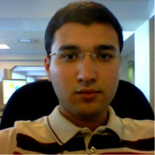

|  |
Dilshod AkbarovCore Network Operation Team Snr. Engineer Mobile Network Operations Unit Service Network and Operation Section Technology Department,Ucell I am a Senior Engineer at Ucell, working and operating on Nokia, ZTE MSS/MGW and Huawei SmartCare prtocol analyzer. And I am also very interested in Web development. |
Master of Engineering in Information and Communication – August 2007
Bachelor of Sciences in Television, Radiocommunication and Radiobroadcasting – June 2005
| Dates | Work |
|---|---|
| 2009 - 2016 | Operation and maintenance team engineer at Ucell |
| 2016 - present | Core Network Operations team Senior Engineer |
Improvement of Pattern Matching Positioning method (2007)
| Matlab programming | ⭐⭐⭐⭐⭐ |
| C/C++ programming | ⭐⭐ |
| HTML(5) | ⭐⭐⭐ |